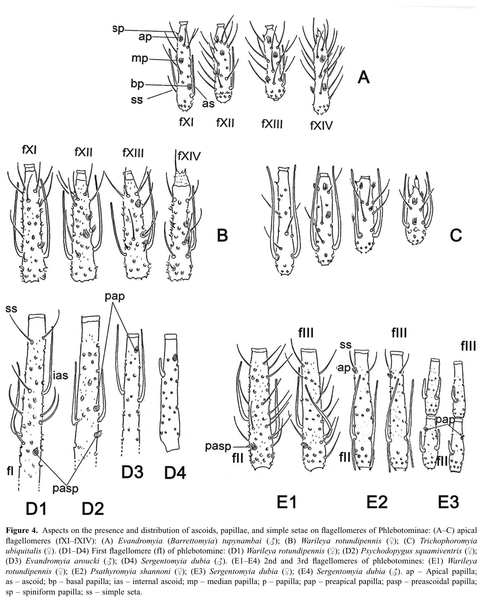
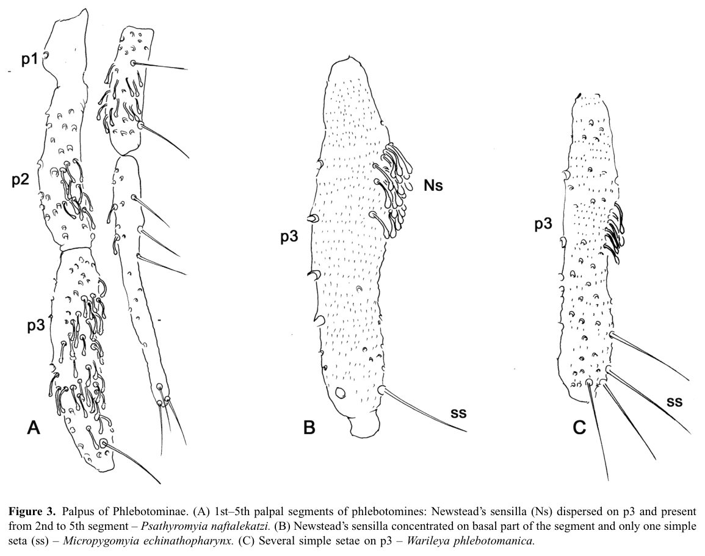
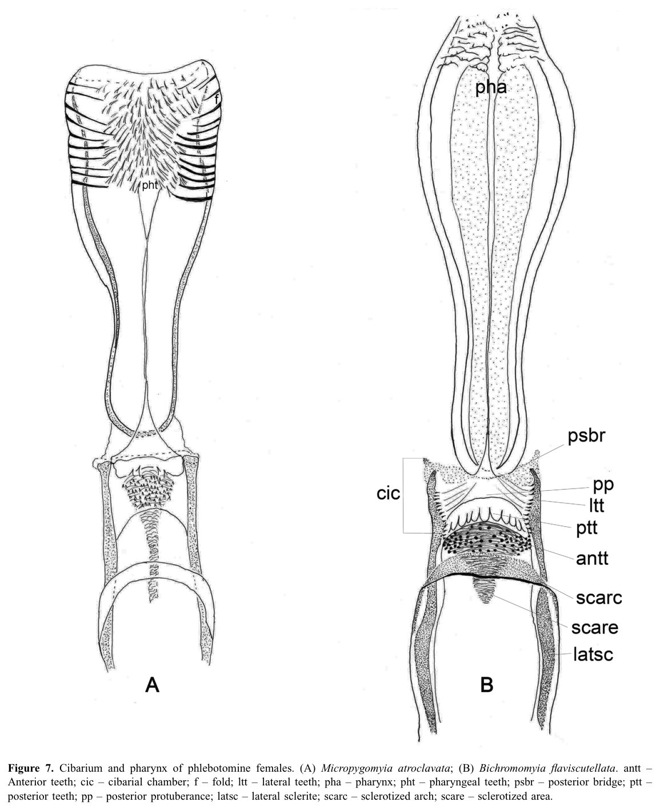
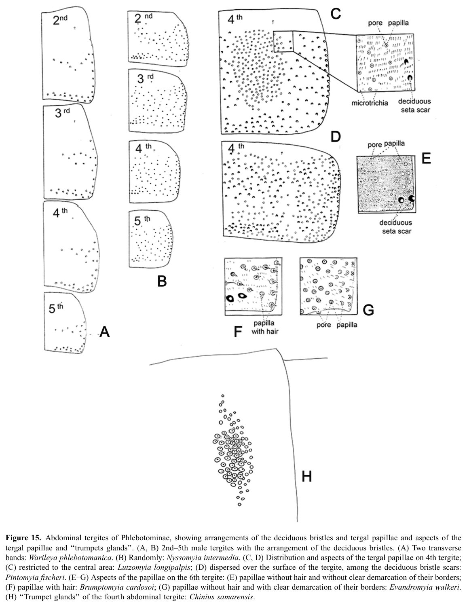
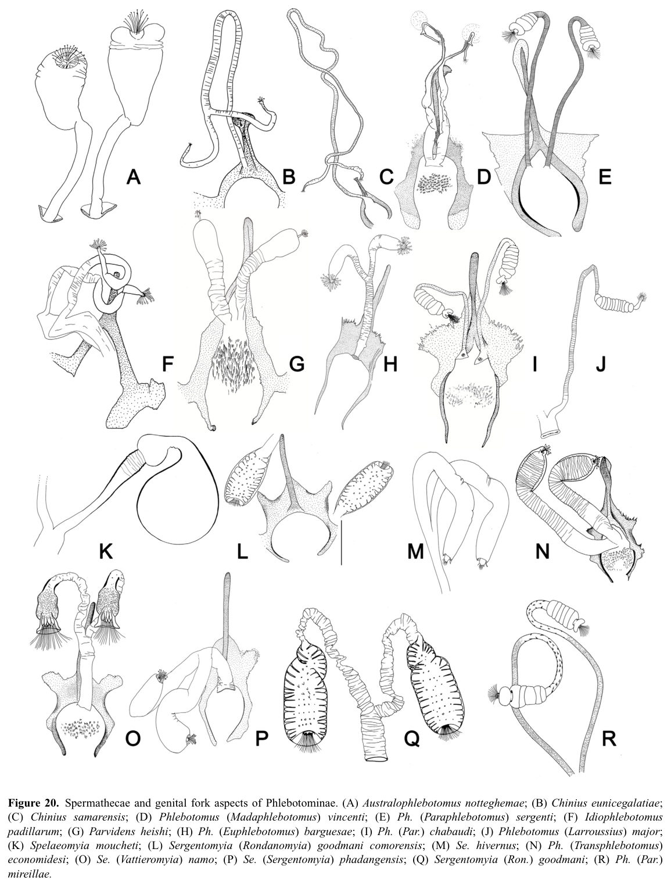
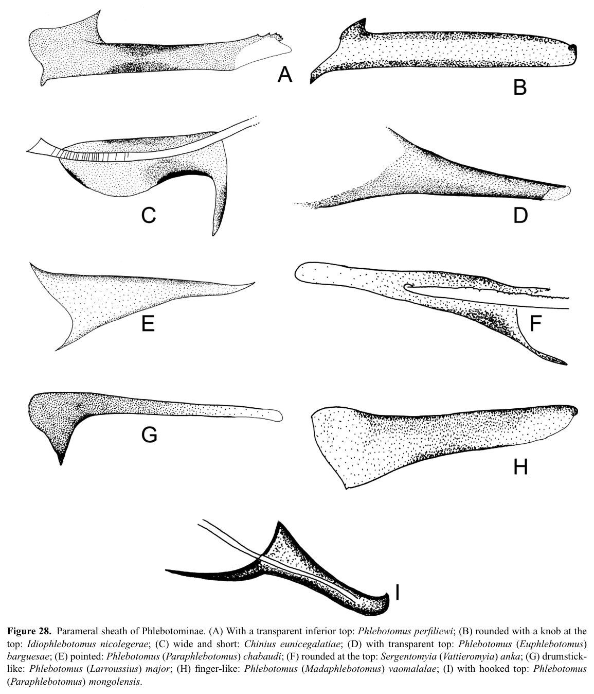
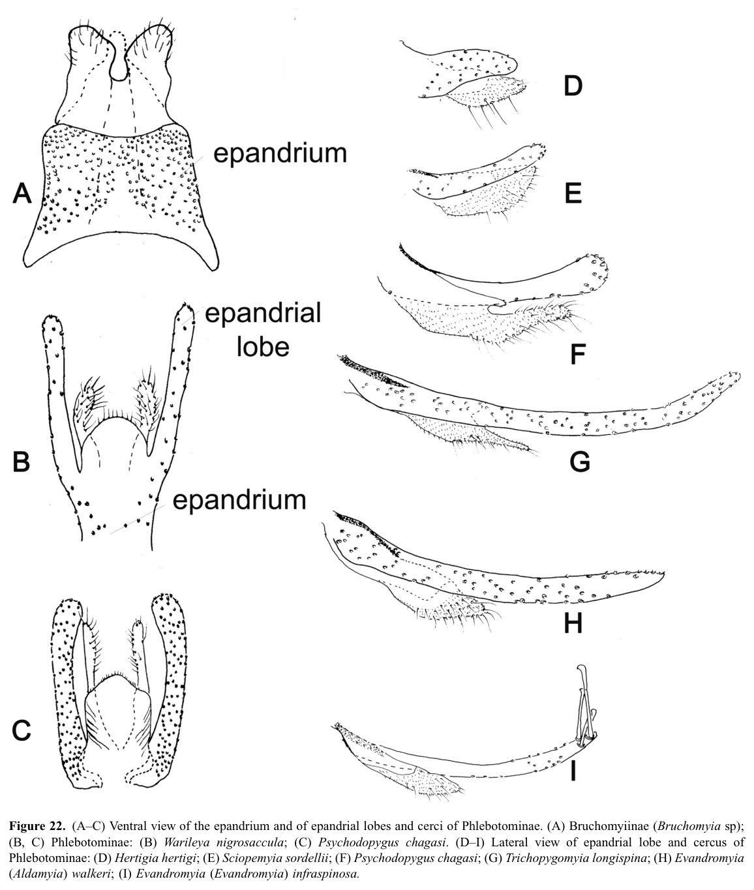

Glossary of characters
Older keys (Lewis, Quate) use older terms. The preferred terms follow Galati et al. 2017, the consensus terminology agreed at ISOPS IX. Thumbnails open the illustrating figure.
| Term in keys | Preferred term | Synonyms | Sex | Meaning | Figures |
|---|---|---|---|---|---|
| Antenna 3 | Flagellomere 1 (f1) | AIII; antennal segment 3 | both | First flagellomere, the first long segment of the antenna after scape and pedicel. Older keys number antennal segments from the scape, so 'antenna 3' = f1, 'antenna 4' = f2, 'antenna 5' = f3. Lengths and ratios to the labrum are used in many couplets. |   |
| Ascoid | Ascoid | Geniculated spine | both | Hyaline sensory rod on the flagellomeres. Number per segment (antennal formula), length relative to the segment (e.g. asc/f2) and presence of spurs are diagnostic (e.g. S. gemmea and S. raynali have spurred ascoids). | |
| Papilla | Papilla | Hirsute gland; sensorial papilla | both | Small sensillum on the flagellomeres. Its presence on antenna 5 (f3) separates P. argentipes from P. philippinensis in Lewis 1978. | |
| Newstead's sensilla | Newstead's sensilla | Newstead's spines; Newstead scales; hyaline sensilla; peg sensilla | both | Club-shaped sensilla on palpal segment 3 (sometimes 2). Their arrangement is used by Quate 1962 and Lewis 1978. |  |
| Palpal formula | Palpal formula | both | The sequence of palp segments from shortest to longest, e.g. 1-2-4-3-5. | ||
| Labrum | Labrum-epipharynx | both | The dorsal mouthpart. Its length is the standard against which antenna 3 and wing length are compared. |  | |
| Cibarium | Cibarium | Buccal cavity | both | The chamber behind the mouthparts. Its armature (teeth, sclerotized area, arch) is the most-used character in female Sergentomyia keys. |     |
| Hind teeth | Posterior teeth | Horizontal teeth; cibarial teeth; main teeth | female | The main transverse row of teeth at the hind end of the cibarium. Counts and row shape (concave, convex, straight) are key characters. |  |
| Fore teeth | Anterior teeth | Vertical teeth; erect teeth; denticles | female | Smaller teeth in one or more rows in front of the hind teeth. Number of rows (e.g. 'three rows of fore teeth') is used in Neophlebotomus couplets. | |
| Pigment patch | Sclerotized area | Pigmented area; pigment belt; plage pigmentée | female | Darkened area of the cibarium in front of the tooth row. Its shape (bifid tip, anterior projection, narrow/linear) is diagnostic. |  |
| Cibarial arch | Sclerotized arch | Chitinous arch | female | Arched sclerite at the front of the cibarium; the distance between arch and teeth is used in Lewis 1978 couplet 168. | |
| Notch | Notch of the ventral plate | female | A median notch at the hind end of the cibarial ventral plate; characteristic of the S. babu series. | | |
| Pharynx | Pharynx | both | Tube behind the cibarium. The hind part may carry an armature of teeth, scales, ridges or spicules, which is key for Phlebotomus subgenera and Parrotomyia. | | |
| Pharyngeal armature | Pharyngeal teeth | Spines of pharynx | both | The teeth, scales or ridges lining the hind part of the pharynx. | |
| R2/R2+3 | Wing index alpha/beta | Wing index | both | Ratio of the length of vein section R2 (alpha) to R2+3 (beta). 'R1 overlap' is the distance by which the tip of R1 passes the fork of R2+3. |  |
| Abdominal tergites 2-6 | Tergites II-VI | both | In Phlebotomus the hairs on tergites 2-6 are erect and arise from large sockets; in Sergentomyia they are recumbent with small sockets. This is couplet 1 of most keys. |   | |
| Spermatheca | Spermatheca | Body of spermatheca | female | Paired sperm-storage organ. Segmented (ringed), striated, smooth capsule or tubular forms define subgenera. |     |
| Head of spermatheca | Terminal knob | Head; apical segment | female | The apical part of the spermatheca, sometimes on a narrow neck. | |
| Spermathecal ducts | Individual and common spermathecal ducts | Ducts | female | Each spermatheca opens into an individual duct; these join into a common duct. Their lengths separate P. shadenae, P. stantoni and P. hoepplii. | |
| Genital furca | Genital fork | Genital furca | female | Sclerite of the female genital chamber. | |
| Coxite | Gonocoxite | Basistyle; basimere; coxite | male | Basal segment of the male clasper. Its basal process or tuft of hairs (brush) is diagnostic. |  |
| Style | Gonostyle | Dististyle; distimere; style | male | Distal segment of the clasper. Number and position of its spines (terminal, subterminal, near middle) are used at genus and subgenus level; Sergentomyia has an accessory seta. |   |
| Accessory seta | Accessory seta of gonostyle | Setiform spine | male | Fine seta on the gonostyle of Sergentomyia (absent in Phlebotomus). | |
| Paramere | Paramere | Intermediate appendage; clasper; claspette | male | Middle appendage of the male genitalia. Number of lobes (simple, bilobed, trilobed) separates Euphlebotomus and Anaphlebotomus species. |  |
| Aedeagus | Parameral sheath | Aedeagal sheath; aedeagus; penis; gubernaculum | male | The sclerotized sheath through which the genital filaments emerge (older keys call it the aedeagus). Its tip shape is used in Parrotomyia and Larroussius. |  |
| Genital filaments | Aedeagal ducts | Genital filaments; ejaculatory ducts; penal filaments | male | Paired ducts leaving the sperm pump. Their length relative to the pump is diagnostic (e.g. P. shadenae versus P. stantoni). |  |
| Genital pump | Sperm pump | Ejaculatory pump; pompetta | male | Internal pump that the genital filaments leave. Used as the unit for filament length. | |
| Surstyle | Epandrial lobe | Lateral lobe; surstyle; lower gonapophysis | male | Lobe beside the gonocoxite. Terminal spines on it occur in subgenus Phlebotomus. |  |
| Intra-abdominal rods | Hypandrial apodemes | Sclerotized rods | male | Paired rods next to the sperm pump; characteristic of Idiophlebotomus. | |
| Anepimeron scales | Anepimeral scales | both | Scales on the anepimeron (thorax side); counted in the Lewis 1987 Grassomyia key. |  | |
| Trumpet glands | Trumpet glands | glandes en trompettes; trumpet-shaped glands | male | Small trumpet-shaped glandular structures on the abdominal tergites of males of Chinius: 40-50 on the antero-dorsal parts of tergites 4 and 5 in Ch. barbazani, also present in Ch. junlianensis; Depaquit et al. (2006) include them in the definition of the genus. |